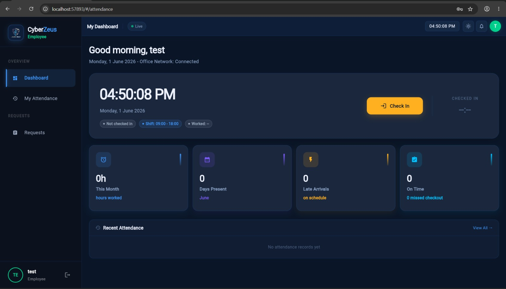
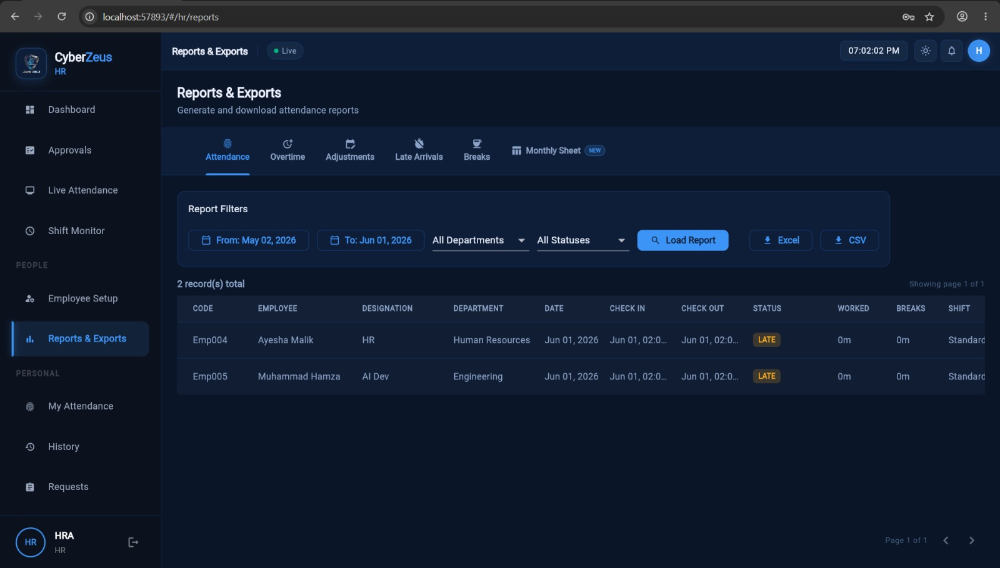
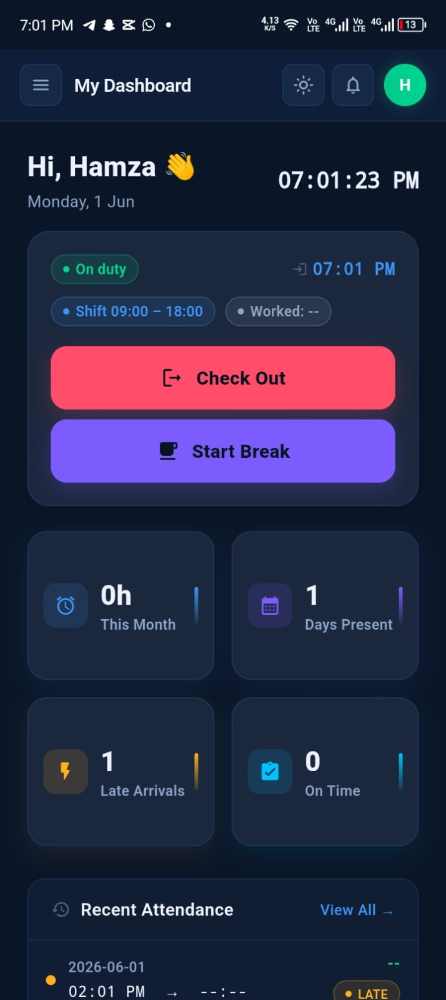
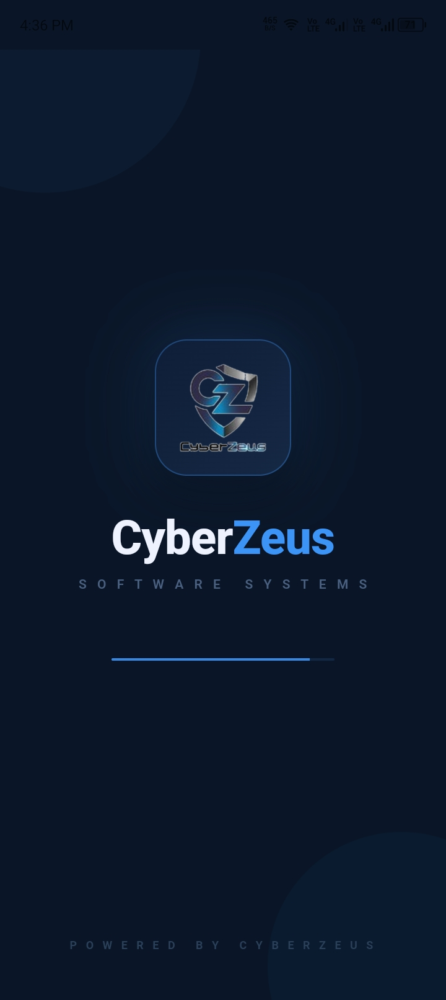
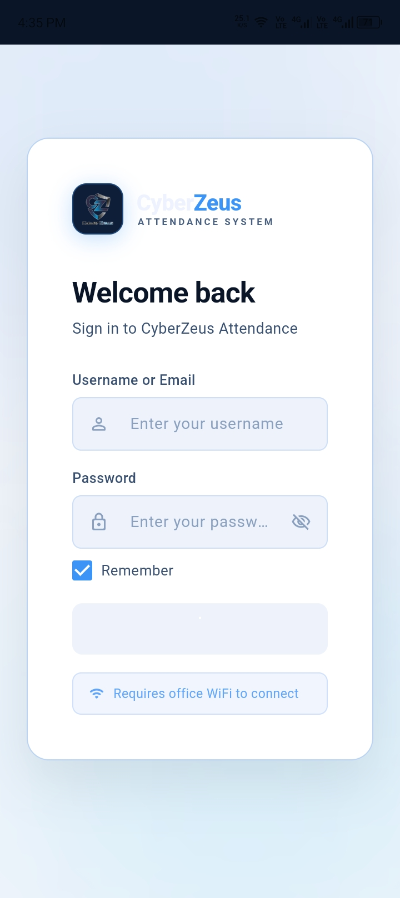

Attendance Management System
A cross-platform Flutter + Node.js/TypeScript workforce platform for attendance tracking, shift management and HR reporting.





Overview
A comprehensive employee attendance and workforce management platform combining a responsive Flutter frontend (Android, Web and Windows) with a Node.js + TypeScript REST API backend — centralizing attendance tracking, shift management, request workflows and HR reporting for organizations.
Purpose — Why This Project Exists
Manual timesheets and spreadsheet-based attendance are error-prone, easy to manipulate and painful to audit once a workforce grows beyond a handful of people. This platform exists to give organizations one authoritative, server-verified source of truth for attendance — accessible from a phone, a browser or a desktop app — with role-based approvals so corrections and overtime can't just be self-reported.
Animated Workflow
Key Features
Benefits
Replaces error-prone spreadsheets with server-verified timestamps.
Role-based approvals mean corrections can't be self-reported unchecked.
Android, Web and Windows share a single Flutter frontend.
Exportable reports plug straight into HR and payroll workflows.
Technology Stack
Flutter 3.x Dart Riverpod 2.x GoRouter Material 3 Node.js 20 TypeScript Express.js SQLitePlatforms
Android · Web · Windows — one responsive codebase optimized for both mobile and desktop workflows.